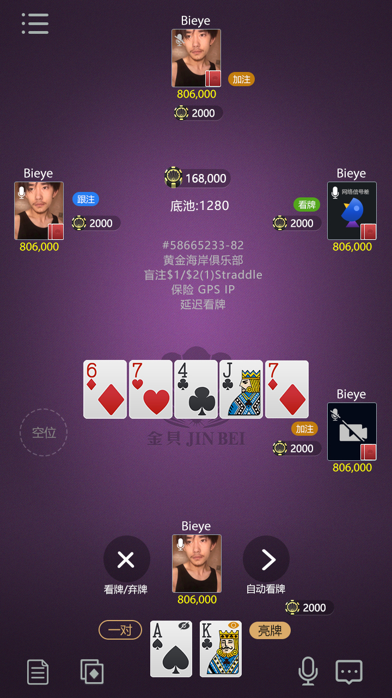
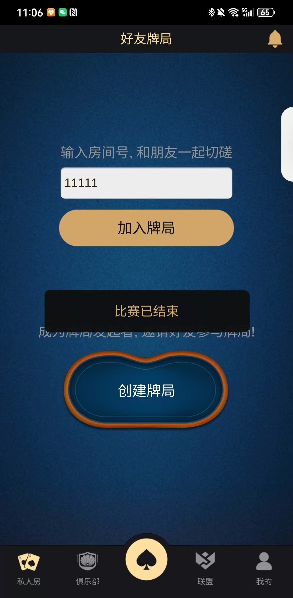
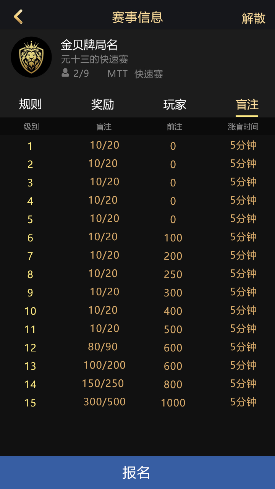
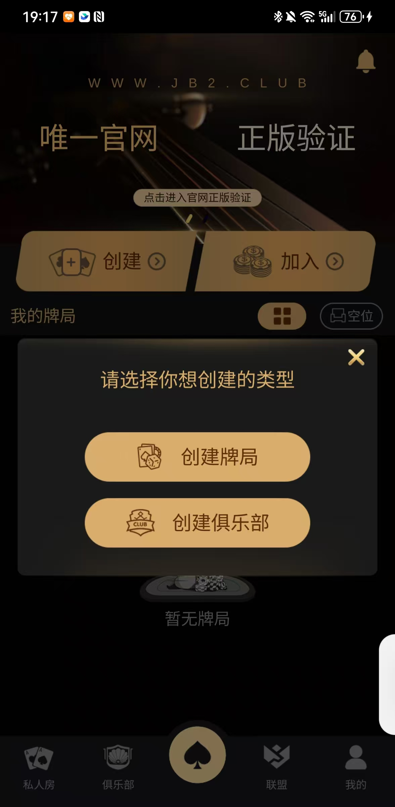
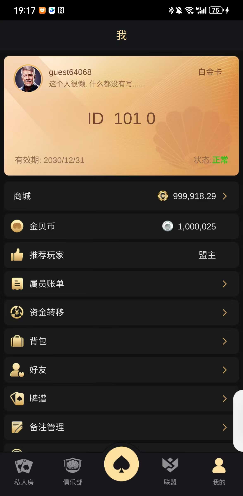

加入、下注與結算
支援房間加入/離開、線上狀態、下注、棄牌、開局、結束與結算流程。
產品功能與玩法
重點是說明玩家流程和程式碼邊界：牌桌、房間、協定、客戶端以及俱樂部/賽事模組。
支援房間加入/離開、線上狀態、下注、棄牌、開局、結束與結算流程。
建立私桌、邀請熟人、俱樂部申請、聯盟入口和俱樂部幣組成社交路徑。
賽事截圖及 match 協定展示報名和賽事牌桌主題，完整規則需結合設定驗收。

多人對局
牌桌展示玩家座位、公共牌、操作區和即時對局入口；原始碼中可核實下注、自動操作、牌局結束與玩家狀態檔案。

好友私人局
好友局頁面對應邀請和私桌場景，可用於評估朋友房、俱樂部成員房和輕量社交玩法。

賽事入口
MTT 頁面、報名票據和賽事協定文件構成賽事入口主題；上線前應單獨驗收賽制、結算和後台。
技術架構
目錄提供客戶端腳本、協定定義、房間邏輯、路由、訂單、推送和營運介面。
GameApp、GameLoading、訊息處理、Login 與 Assets。
allin、autobet、autofold、gameend 和玩家生命週期。
Hall、Club、Friends、Match、Order、Push 等 proto/tars。
Router、Order、Processor 與外部服務適配。
建立、聯盟和個人資料頁面補足即時牌桌之外的產品資訊。



Telegram：@xuzongbin001 Email：masterai918@gmail.com
公開目錄和截圖用於研究、演示與技術評估。部署前請核實依賴、授權、安全、平台 SDK、壓測和地區合規，不要把截圖等同於完整商業交付。